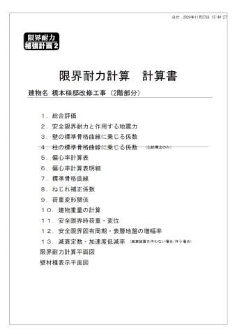
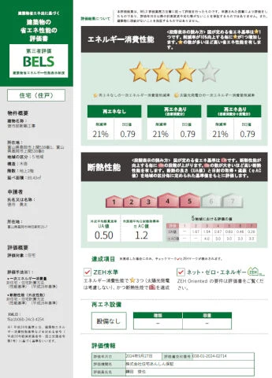
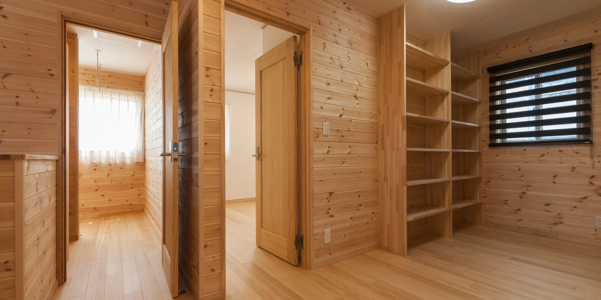

イベント情報
（終了しました）＜砺波市＞二十歳で5000万円相当の家を手に入れた方法｜2階建て５LDK
詳しいご案内
日程・価格・募集内容などは、掲載当時の情報です。
二十歳で5,000万円相当の家（2階建て５LDK）を半分のコストで手に入れた話
―― 「新築は無理」と思っているあなたへ。賢いマイホームの造り方
「いつかは家を建てたい」でも、現実は...
開催日時：3月29日（土）～4月6日（日）
開催場所：砺波市林
Hさん（20歳・仮名）は、賃貸
- ・冬は寒く、夏は暑い。
断熱性が悪くて住みにくい - ・アパートだから、周囲の生活音が気になる
- ・家賃を払っても何も残らない
「毎月の家賃で65,000円も払ってるのに、このままでいいのか？」そんなモヤモヤを抱えていました。
母の一言で
―― 運命が変わる
ある日、Hさんの母が何気なく言いました。「アルバイト先の人がね、
6年前にフジ創で家を建てたんだって。
漆喰で天然素材の家、すごく快適らしいよ！」
- ・冬は暖かく、夏は涼しい！
- ・空気がキレイで、健康的！
- ・耐震もしっかりしてて安心！
Hさんの母：「本当に住み心地が違う！」と絶賛してたよ！
Hさん：「そんなに違うの？」
気になったHさんは、試しにフジ創に相談してみることにしました。
新築を建てるには
――土地がカギだった
資金計画を立てていくと、土地の条件が最も重要だと分かりました。
フジ創Tさん：「この家を建てるなら、土地は500万円で抑えないと厳しいですね。」
Hさんの希望エリアは、小矢部市と氷見市に近く、融雪設備が整った地域。
Hさん：「そんな条件で500万円の土地ってあるの？」
そう思いながら探していたところ、
意外な出会いがありました。
土地ではなく
――500万円の中古物件を発見！
Hさん：「土地じゃなくて...中古物件？」
最初はピンとこなかったHさんですが、フジ創の提案はこうでした。
フジ創Tさん：「この中古物件を
リノベーションすれば、
新築同様の快適な家になりますよ。」
フジ創Tさん：「リノベーションは、建て替えではなく、土台や柱を残すことで、解体費用や家造りのコストを抑えて家を建てることができます。」
実際の施工事例を見せてもらうと、
まるで新築のように美しく生まれ変わった家がそこに。
Hさん：「これなら...自分にも手が届くかも！」
Hさんは、500万円の中古物件を購入し、間取り変更を含めた
リノベーション型注文住宅を実現することを決意しました。
コスト半分で新築以上
の家を手に入れる方法
リノベーションを進めると、Hさんの家は...
- ・漆喰の壁で、空気がキレイな快適空間に！
- ・天然木のぬくもりを感じる木の家に！
- ・5,000万円相当の家を半分のコストで、実現！
Hさん：「新築を買うより、ずっとコスパがいい。**リノベーション型注文住宅ってこんなに変わるんだ！**と驚いています。」
リノベーション型
注文住宅という新しい選択肢
「自分の理想の家をゼロから建てたいけど、コストが・・・」
そんな方には、リノベーション型注文住宅という選択肢も。
- ・既存の建物を活かしながら、間取りを変更！
- ・新築同様の性能とデザインを実現！
- ・天然素材を活かした健康的な住まい！
- ・耐震は最高レベル、断熱性能は6レベル！
フジ創では、リノベーション型注文住宅にも対応しています。
「どちらが自分に合っているのか分からない」という方も、まずは相談してみませんか？
まずは、実際に見て体感しませんか？
Hさんのように、「家はまだ先」と思っている方こそ、一度見学してみるのがおすすめです。
◎実際にフジ創が手がけた
＼リノベーション住宅・注文住宅を体感！／
- ・漆喰の家の快適さを実際に体験！！
- ・住宅ローン・補助金の活用方法も解説！
- ・リノベーション注文住宅の施工実例を公開！
「まだ買うつもりはないけど、ちょっと気になる...」という方も大歓迎！
まずはお気軽にご相談ください！
あなたにぴったりのプランをご提案します。
だからこそ、「フジ創」の
リノベーションが選ばれる理由
ただのフルリフォームじゃない。ReLifeする。
同じコストで新築以上の住宅へ
「最初は理解するまで躊躇していた...」
リノベーションを選ぶことは、最初は少し不安があるかもしれません。特に、「中古物件をリノベーションして本当に新築のようになるのか？」と考える方も多いでしょう。しかし、実際に体験してみると、その違いは歴然です。フジ創は、リノベーションに対する深い知識と豊富な経験を持っていますので、初めての方でも安心して
「リノベーションは無理だろう...」という思いを持っている方こそ、実際に見学会で体感してみる価値があります。
フジ創だからこその安心ポイント
1. 耐力計算書と断熱証明書がついてくる
リノベーション後の家は、しっかりと耐力計算書と断熱証明書がついてきます。これにより、将来中古物件として売却する際も安心です。耐力計算書や断熱証明書があることで、買い手も家の安全性や性能に対して安心でき、リノベーションした家が新築同様に扱われます。これこそが、フジ創ならではの強みです。


2. 耐震性能の高さ
フジ創では、リノベーションの際に耐震性能も徹底的に強化します。現行の耐震基準に適合するだけでなく、必要に応じてさらに強化することも可能です。特に日本は地震が多い地域ですから、耐震性を高めることは家を守るためには欠かせません。地震に強い設計と、耐震装置を標準装備しています。フジ創では、
3. 漆喰の壁のメリット
漆喰は、天然素材でありながら優れた機能性を持つ素材です。湿度を調整し、空気を清浄に保つ効果があります。漆喰壁の家は、温度差が少なく、四季を通じて快適に過ごすことができるため、健康にも良い影響を与えます。また、漆喰には消臭効果もあるため、空気が清潔で、家全体が快適に保たれます。
4. 無垢の木材のメリット
無垢の木材は、自然な風合いと温かみが魅力的で、長期間使うほどに味わい深さが増します。さらに、無垢材は調湿作用があり、湿度をコントロールしてくれるため、居住空間が常に快適に保たれます。無垢材を使った家は、風合いが時間とともに変化し、愛着が湧いてきます。また、環境にも優しく、エコな素材です。
健康に良い家、手の届く価格で子育てする世代に届けたい
集成材は使わない
――社長のこだわり。
コストが高くても健康に良い建材を使用
――社長の想い。
フジ創Ainosのアイノスってどんな意味？
愛の巣
「愛の巣」・・・若者が子育てしやすい家を手に入れやすくご提供したいという想いでできた会社
最後に...理想の住まいを手に入れるために
リノベーションは、「最初は躊躇してしまうかもしれない」という方も多いですが、
フジ創が提供する家は、耐震性、断熱性、そして天然素材にこだわり抜いた健康的な住まいです。
将来売却しても価値がしっかりと残るように、構造計算書と断熱証明書もついており、
リノベーションによるデメリットは一切ありません。

「新築は無理かも...」とあきらめていませんか？
フジ創なら、予算を抑えながらも理想の住まいを実現できます。
まずはお気軽にご相談ください！
あなたにぴったりのプランをご提案します。
開催日時：3月29日（土）～4月6日（日）
開催場所：砺波市林